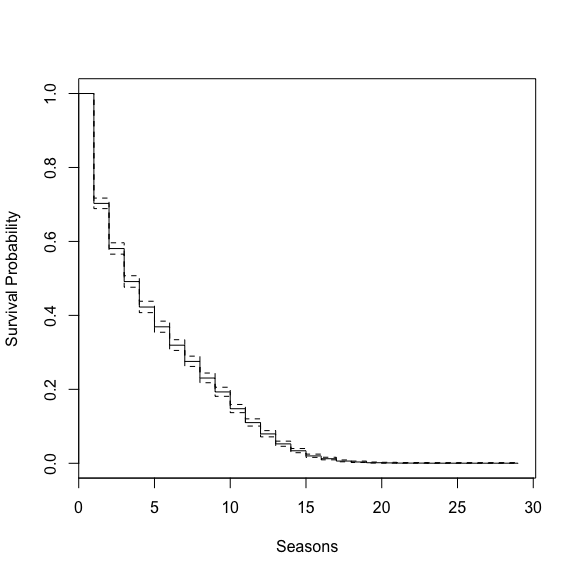
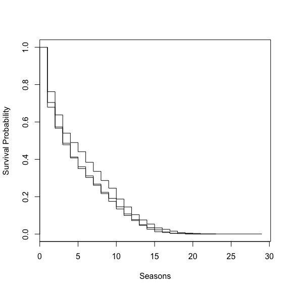
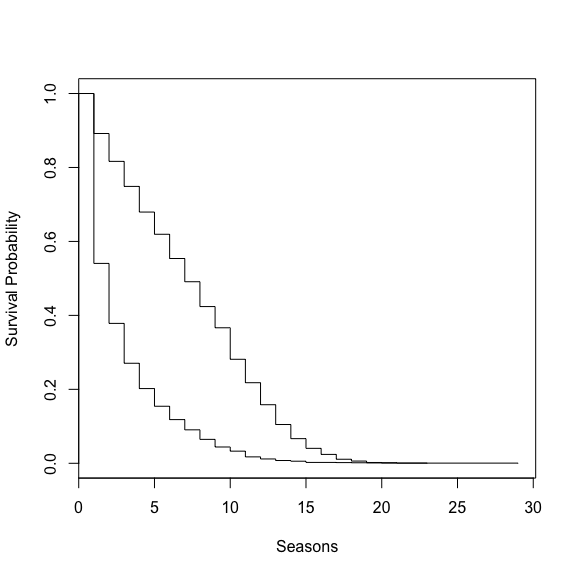

Looking at the lifespan of an NBA player. The first thing is to load the data for each player into the workspace and get and understanding of its contents. I will try to make this data available but I am in the middle of determining which of multiple sources is the most robust and the cleanest, so I have multiple versions with various differences. The head and str functions are used to get a representation of what the data looks like.
library(plyr)
library(survival)## Loading required package: splines# Load data
load("~/Desktop/r/hoops/player_detail.RData")
str(player)## 'data.frame': 21247 obs. of 9 variables:
## $ name : chr "Alaa Abdelnaby" "Alaa Abdelnaby" "Alaa Abdelnaby" "Alaa Abdelnaby" ...
## $ positon: chr "F" "F" "F" "F" ...
## $ Age : num 22 23 24 24 25 26 26 22 23 24 ...
## $ Team : chr "POR" "POR" "MIL" "BOS" ...
## $ G : num 43 71 12 63 13 3 51 82 82 81 ...
## $ Min : chr "290" "934" "159" "1152" ...
## $ Pts : chr "135" "432" "64" "514" ...
## $ PPG : chr "3.1" "6.1" "5.3" "8.2" ...
## $ Season : num 1990 1991 1992 1992 1993 ...head(player)## name positon Age Team G Min Pts PPG Season
## 1 Alaa Abdelnaby F 22 POR 43 290 135 3.1 1990
## 2 Alaa Abdelnaby F 23 POR 71 934 432 6.1 1991
## 3 Alaa Abdelnaby F 24 MIL 12 159 64 5.3 1992
## 4 Alaa Abdelnaby F 24 BOS 63 1152 514 8.2 1992
## 5 Alaa Abdelnaby F 25 BOS 13 159 64 4.9 1993
## 6 Alaa Abdelnaby F 26 PHI 3 30 2 0.7 1994The next step would typically be cleaning. I have already done lots of cleaning to this data to get it the stage that it is at though. Maybe that will be another post. The step after cleaning is often using the raw data to create variables of interest for the analytics task at hand. For survival analysis it is necessary to have variables that describe the lifespan of players as well as when they started. Next we will aggregate some of the raw data down into a more tidy format, one row per player as opposed to one row per player per season per team, how the source is formatted.
# Before we can start grouping rows by player we need a unique identifier.
# Players may have a common name, so lets create a manner to step
# around that.
player$bday <- player$Season - player$Age
puid <- unique(player[, c('name', 'bday')])
puid$guid <- 1:nrow(puid)
player <- merge(player, puid)
head(player)## name bday positon Age Team G Min Pts PPG Season guid
## 1 A.c. Green 1963 F 22 LAL 82 1542 521 6.4 1985 1320
## 2 A.c. Green 1963 F 23 LAL 79 2240 852 10.8 1986 1320
## 3 A.c. Green 1963 F 24 LAL 82 2636 937 11.4 1987 1320
## 4 A.c. Green 1963 F 25 LAL 82 2510 1088 13.3 1988 1320
## 5 A.c. Green 1963 F 26 LAL 82 2709 1061 12.9 1989 1320
## 6 A.c. Green 1963 F 27 LAL 82 2164 750 9.1 1990 1320# Need to do some data aggrations to create some needed varaibles.
# How long a player lasted in the NBA.
span <- ddply(player, .(guid), summarise, span = max(Age) - min(Age))
head(span)## guid span
## 1 1 4
## 2 2 19
## 3 3 28
## 4 4 5
## 5 5 11
## 6 6 4# A players first season
rookie <- ddply(player, .(guid), summarise, rookie = min(Season))
head(rookie)## guid rookie
## 1 1 1990
## 2 2 1969
## 3 3 1972
## 4 4 1997
## 5 5 1996
## 6 6 1976# The number of games a player played there first year.
games <- ddply(player, .(guid), summarise, games = sum(G))
head(games)## guid games
## 1 1 256
## 2 2 1560
## 3 3 641
## 4 4 236
## 5 5 830
## 6 6 319# Join these data sets together to form one data set.
res <- unique(player[c('name', 'positon', 'guid')])
res <- merge(res, rookie, by = 'guid')
res <- merge(res, span, by = 'guid')
res <- merge(res, games, by = 'guid')
# Cleanup the workspace
rm(span, rookie, games, puid, player)
head(res)## guid name positon rookie span games
## 1 1 Alaa Abdelnaby F 1990 4 256
## 2 2 Kareem Abdul-jabbar C 1969 19 1560
## 3 3 Mahmo Abdul-rauf G 1972 28 641
## 4 4 Tariq Abdul-wahad G 1997 5 236
## 5 5 Shareef Abdur-rahim F 1996 11 830
## 6 6 Tom Abernethy F 1976 4 319This is now starting to look like tidy data. We have one row per player, along with how long they played, the first year they played and two descriptive variables about their fist season.
We will still push this further. Just a few nit picky things as well as creating some variables to answer a few questions later on. Also we need to think about what to do about players that are still playing?
# The count is off by one.
res$span <- res$span + 1
# Average games per season
res$avgGam <- res$games / res$span
# Do you play a lot of games, binary
res$gamBin <- ifelse(res$avgGam > 50, 'a', 'b')
# Clean up data frame.
res$games <- NULL
# A few players have no age in the data
res <- res[complete.cases(res), ]
# Order by players with a longer history
res <- res[order(res$span, decreasing = T), ]
# Create the year they retired
res$retire <- res$span + res$rookie
# If that's before 2014 they retired, otherwise the data is censored in time.
res$event <- ifelse(res$retire < 2014, 1, 0)The data is now ready to run a survival analysis. We can run one with a constant to determine the most likely lifespans.
kms <- survfit(Surv(res$span, res$event) ~ 1)
summary(kms)## Call: survfit(formula = Surv(res$span, res$event) ~ 1)
##
## time n.risk n.event survival std.err lower 95% CI upper 95% CI
## 1 3964 1178 0.702825 0.007259 6.89e-01 0.71720
## 2 2786 484 0.580727 0.007837 5.66e-01 0.59629
## 3 2302 354 0.491423 0.007940 4.76e-01 0.50723
## 4 1948 273 0.422553 0.007846 4.07e-01 0.43821
## 5 1675 212 0.369072 0.007664 3.54e-01 0.38440
## 6 1463 197 0.319374 0.007405 3.05e-01 0.33422
## 7 1266 174 0.275479 0.007096 2.62e-01 0.28974
## 8 1092 178 0.230575 0.006690 2.18e-01 0.24407
## 9 914 149 0.192987 0.006268 1.81e-01 0.20567
## 10 765 180 0.147578 0.005633 1.37e-01 0.15904
## 11 585 149 0.109990 0.004969 1.01e-01 0.12017
## 12 436 121 0.079465 0.004296 7.15e-02 0.08835
## 13 315 107 0.052472 0.003542 4.60e-02 0.05989
## 14 208 74 0.033804 0.002870 2.86e-02 0.03993
## 15 134 55 0.019929 0.002220 1.60e-02 0.02479
## 16 79 30 0.012361 0.001755 9.36e-03 0.01633
## 17 49 25 0.006054 0.001232 4.06e-03 0.00902
## 18 24 10 0.003532 0.000942 2.09e-03 0.00596
## 19 14 8 0.001514 0.000617 6.80e-04 0.00337
## 20 6 2 0.001009 0.000504 3.79e-04 0.00269
## 21 4 2 0.000505 0.000357 1.26e-04 0.00202
## 23 2 1 0.000252 0.000252 3.55e-05 0.00179
## 29 1 1 0.000000 NaN NA NAplot(kms, xlab = 'Seasons', ylab = 'Survival Probability')

This is pretty interesting, there is a big drop off in the first year. This seems plan out, thus experience is good. That sounds a bit odd though. Lets add a players position to see if they are all similar.
kms <- survfit(Surv(res$span, res$event) ~ res$positon)
summary(kms)## Call: survfit(formula = Surv(res$span, res$event) ~ res$positon)
##
## res$positon=C
## time n.risk n.event survival std.err lower 95% CI upper 95% CI
## 1 635 151 0.76220 0.01689 0.729801 0.7960
## 2 484 79 0.63780 0.01907 0.601486 0.6763
## 3 405 62 0.54016 0.01978 0.502752 0.5803
## 4 343 32 0.48976 0.01984 0.452386 0.5302
## 5 311 31 0.44094 0.01970 0.403970 0.4813
## 6 280 36 0.38425 0.01930 0.348222 0.4240
## 7 244 31 0.33543 0.01874 0.300649 0.3742
## 8 213 31 0.28661 0.01794 0.253516 0.3240
## 9 182 26 0.24567 0.01708 0.214368 0.2815
## 10 156 37 0.18740 0.01549 0.159380 0.2203
## 11 119 27 0.14488 0.01397 0.119936 0.1750
## 12 92 26 0.10394 0.01211 0.082716 0.1306
## 13 66 18 0.07559 0.01049 0.057589 0.0992
## 14 48 14 0.05354 0.00893 0.038609 0.0743
## 15 34 13 0.03307 0.00710 0.021717 0.0504
## 16 21 5 0.02520 0.00622 0.015533 0.0409
## 17 16 6 0.01575 0.00494 0.008515 0.0291
## 18 10 5 0.00787 0.00351 0.003289 0.0189
## 19 5 2 0.00472 0.00272 0.001528 0.0146
## 20 3 1 0.00315 0.00222 0.000789 0.0126
## 21 2 2 0.00000 NaN NA NA
##
## res$positon=F
## time n.risk n.event survival std.err lower 95% CI upper 95% CI
## 1 1692 543 0.679078 0.011349 6.57e-01 0.70169
## 2 1149 179 0.573286 0.012024 5.50e-01 0.59734
## 3 970 147 0.486407 0.012151 4.63e-01 0.51081
## 4 823 134 0.407210 0.011944 3.84e-01 0.43131
## 5 689 96 0.350473 0.011599 3.28e-01 0.37396
## 6 593 81 0.302600 0.011168 2.81e-01 0.32530
## 7 512 71 0.260638 0.010672 2.41e-01 0.28242
## 8 441 75 0.216312 0.010009 1.98e-01 0.23685
## 9 366 70 0.174941 0.009236 1.58e-01 0.19401
## 10 296 69 0.134161 0.008286 1.19e-01 0.15142
## 11 227 59 0.099291 0.007270 8.60e-02 0.11461
## 12 168 46 0.072104 0.006288 6.08e-02 0.08554
## 13 122 44 0.046099 0.005098 3.71e-02 0.05726
## 14 78 20 0.034279 0.004423 2.66e-02 0.04414
## 15 58 20 0.022459 0.003602 1.64e-02 0.03075
## 16 38 19 0.011229 0.002562 7.18e-03 0.01756
## 17 19 11 0.004728 0.001668 2.37e-03 0.00944
## 18 8 4 0.002364 0.001181 8.88e-04 0.00629
## 19 4 3 0.000591 0.000591 8.33e-05 0.00419
## 23 1 1 0.000000 NaN NA NA
##
## res$positon=G
## time n.risk n.event survival std.err lower 95% CI upper 95% CI
## 1 1637 484 0.704337 0.011279 6.83e-01 0.72679
## 2 1153 226 0.566280 0.012249 5.43e-01 0.59080
## 3 927 145 0.477703 0.012346 4.54e-01 0.50252
## 4 782 107 0.412340 0.012167 3.89e-01 0.43689
## 5 675 85 0.360415 0.011867 3.38e-01 0.38444
## 6 590 80 0.311546 0.011447 2.90e-01 0.33481
## 7 510 72 0.267563 0.010941 2.47e-01 0.28989
## 8 438 72 0.223580 0.010298 2.04e-01 0.24470
## 9 366 53 0.191203 0.009719 1.73e-01 0.21123
## 10 313 74 0.145999 0.008727 1.30e-01 0.16415
## 11 239 63 0.107514 0.007656 9.35e-02 0.12362
## 12 176 49 0.077581 0.006612 6.56e-02 0.09168
## 13 127 45 0.050092 0.005391 4.06e-02 0.06186
## 14 82 40 0.025657 0.003908 1.90e-02 0.03458
## 15 42 22 0.012217 0.002715 7.90e-03 0.01889
## 16 20 6 0.008552 0.002276 5.08e-03 0.01441
## 17 14 8 0.003665 0.001494 1.65e-03 0.00815
## 18 6 1 0.003054 0.001364 1.27e-03 0.00733
## 19 5 3 0.001222 0.000863 3.06e-04 0.00488
## 20 2 1 0.000611 0.000611 8.61e-05 0.00433
## 29 1 1 0.000000 NaN NA NAplot(kms, xlab = 'Seasons', ylab = 'Survival Probability')

This is very interesting. Centers have a noticeably longer lifespan than either a guard or forward. Is this because there is more of a need. New shooting guards come out of college every year. Very tall centers are more rare. Could it also be point guards and forwards are running around more thus a younger faster player will be better, whereas height is centers real advantage. I have no idea but this is very interesting.
What about the number of games you average in a season?
kms <- survfit(Surv(res$span, res$event) ~ res$gamBin)
summary(kms)## Call: survfit(formula = Surv(res$span, res$event) ~ res$gamBin)
##
## res$gamBin=a
## time n.risk n.event survival std.err lower 95% CI upper 95% CI
## 1 1831 198 0.891862 0.007258 0.877751 0.90620
## 2 1633 138 0.816494 0.009046 0.798955 0.83442
## 3 1495 124 0.748771 0.010136 0.729166 0.76890
## 4 1371 127 0.679410 0.010907 0.658366 0.70113
## 5 1244 110 0.619334 0.011347 0.597488 0.64198
## 6 1134 120 0.553796 0.011617 0.531488 0.57704
## 7 1014 115 0.490989 0.011683 0.468616 0.51443
## 8 899 123 0.423812 0.011548 0.401771 0.44706
## 9 776 105 0.366466 0.011261 0.345048 0.38921
## 10 671 156 0.281267 0.010507 0.261409 0.30263
## 11 515 116 0.217914 0.009648 0.199802 0.23767
## 12 399 109 0.158383 0.008532 0.142513 0.17602
## 13 290 98 0.104861 0.007160 0.091726 0.11988
## 14 192 70 0.066630 0.005828 0.056133 0.07909
## 15 122 48 0.040415 0.004602 0.032331 0.05052
## 16 74 30 0.024031 0.003579 0.017947 0.03218
## 17 44 24 0.010923 0.002429 0.007064 0.01689
## 18 20 9 0.006008 0.001806 0.003333 0.01083
## 19 11 7 0.002185 0.001091 0.000821 0.00581
## 20 4 1 0.001638 0.000945 0.000529 0.00508
## 21 3 2 0.000546 0.000546 0.000077 0.00388
## 23 1 1 0.000000 NaN NA NA
##
## res$gamBin=b
## time n.risk n.event survival std.err lower 95% CI upper 95% CI
## 1 2133 980 0.540553 0.010790 5.20e-01 0.56212
## 2 1153 346 0.378340 0.010501 3.58e-01 0.39949
## 3 807 230 0.270511 0.009618 2.52e-01 0.29004
## 4 577 146 0.202063 0.008694 1.86e-01 0.21984
## 5 431 102 0.154243 0.007820 1.40e-01 0.17036
## 6 329 77 0.118143 0.006989 1.05e-01 0.13267
## 7 252 59 0.090483 0.006211 7.91e-02 0.10351
## 8 193 55 0.064698 0.005326 5.51e-02 0.07603
## 9 138 44 0.044069 0.004444 3.62e-02 0.05370
## 10 94 24 0.032818 0.003858 2.61e-02 0.04132
## 11 70 33 0.017346 0.002827 1.26e-02 0.02387
## 12 37 12 0.011721 0.002330 7.94e-03 0.01731
## 13 25 9 0.007501 0.001868 4.60e-03 0.01222
## 14 16 4 0.005626 0.001619 3.20e-03 0.00989
## 15 12 7 0.002344 0.001047 9.77e-04 0.00563
## 17 5 1 0.001875 0.000937 7.04e-04 0.00499
## 18 4 1 0.001406 0.000811 4.54e-04 0.00436
## 19 3 1 0.000938 0.000663 2.35e-04 0.00375
## 20 2 1 0.000469 0.000469 6.61e-05 0.00333
## 29 1 1 0.000000 NaN NA NAplot(kms, xlab = 'Seasons', ylab = 'Survival Probability')

This is not as surprising. If you play a lot of games in a season you can expect to have a larger chance of playing next year. But it does verify what my thoughts would have been. Plenty of times looking at data I see things I would expect to be true end up being nowhere near correct, it is usually in those times when you learn something useful as well.
I think this was interesting from the standpoint of NBA players but also refreshing myself to survival analysis. I want to look at points and playoffs as a next step but need some more time gather and clean data. I also want to look at two different types of outcomes in a player’s lifespan, can we see when a player is traded compared to no longer playing in general.